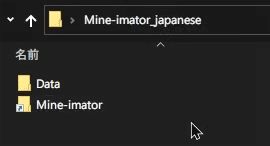

Mine-imator日本語化パッチ
スクリーンショット

注意事項
●当サイトで配布するファイルデータにつきましては、個人で行った翻訳となります。正式なデベロッパーとは関係ありません。
●日本語化パッチの適用後、Mine-imatorの起動に時間がかかったり、動作に少し重くなる可能性があります。英語に慣れてる方は、本パッチの適用は非推奨です。
●文字が消えてしまう現象は、フォントが初期設定になってるのが問題です。言語を日本語に適用しただけでは日本語化にはなりません。
●枠からはみ出る対策として、一部のカタカナ表記は半角ｶﾀｶﾅに変換してます。
●日本語ファイルデータの使用は個人利用に限ります。二次配布等は禁止です。
●当サイトに掲載された内容を用いて行った行為による損害等の一切の責任を負いかねますのでご了承ください。
●今後新しいアップデートに対応するかどうかは気分となります。一人でほとんどの作業をしていますので、今後のアップデートについては未定となります。
●一部翻訳ミスがあるかもしれません。誤訳や誤字、脱字等気づいたことがありましたら、最下部のフォームから連絡していただけると幸いです。
日本語化の手順
1.日本語フォントを事前に用意
Mine-imatorで使われているフォントは日本語に対応してないので、日本語のフォントファイルに置き換える必要があります。各自でお調べになり、ダウンロードした日本語フォントの形式がTTFであることを確認してください。
設定した日本語フォントが移動したり消えてしまわないように、予め適切な場所に置いてください。
(例)ドキュメントフォルダに「fonts」というフォルダを作り、ここにフォントファイルを配置。
2.日本語パッチデータのダウンロード
Mine-imator_japanese.zip※リンク先の共有はご遠慮ください。ファイルを更新するごとに変更され、古いリンク先は開けなくなります。
zip形式の圧縮ファイルですのでダウンロード後解凍してください。
DataフォルダをMine-imatorフォルダの中に入れます。入れ終わったらMine-imatorフォルダをダブルクリックし、Mine-imator.exeを実行してください。 3.日本語フォントに設定
新規作成後、上にあるsettings設定をクリックし、「Interface」を開いてください。Font: Defaultの下のfolderをクリックして用意した日本語フォントに切り替えます。

4.言語を日本語に設定
さらに下のfolderをクリックしてjapanese.milanguageに切り替えたら日本語化の完了です。
更新ログ
2021/05 一部の翻訳を修正
2021/02 誤訳の修正
2020/07 Mine-imator ver 1.2.7に対応
2020/01 パッチデータ公開